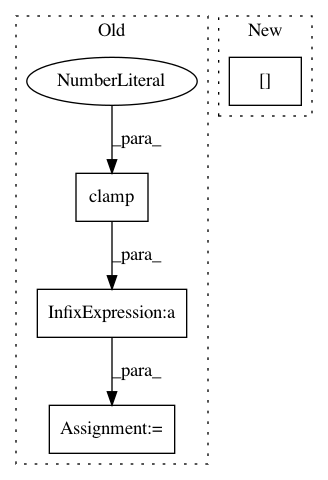

1a73a1367fedfa8368b6c42103e60e1b370bc14a,catalyst/contrib/criterion/focal_loss.py,FocalLoss,forward,#FocalLoss#Any#Any#,11
Before Change
f"Got ({targets.size()}) and ({outputs.size()})"
)
max_val = (-outputs).clamp(min=0)
log_ = ((-max_val).exp() + (-outputs - max_val).exp()).log()
loss = outputs - outputs * targets + max_val + log_
invprobs = F.logsigmoid(-outputs * (targets * 2.0 - 1.0))
loss = (invprobs * self.gamma).exp() * loss
After Change
if cls == self.ignore:
continue
cls_label_target = targets[..., cls].long()
cls_label_input = logits[..., cls]
loss += sigmoid_focal_loss(
In pattern: SUPERPATTERN
Frequency: 3
Non-data size: 4
Instances
Project Name: Scitator/catalyst
Commit Name: 1a73a1367fedfa8368b6c42103e60e1b370bc14a
Time: 2019-04-19
Author: scitator@gmail.com
File Name: catalyst/contrib/criterion/focal_loss.py
Class Name: FocalLoss
Method Name: forward
Project Name: allenai/allennlp
Commit Name: 8ba58675175e91d306f55380833458acfcb38cdd
Time: 2018-05-10
Author: pradeep.dasigi@gmail.com
File Name: allennlp/models/semantic_parsing/nlvr/nlvr_decoder_step.py
Class Name: NlvrDecoderStep
Method Name: _get_action_query
Project Name: cornellius-gp/gpytorch
Commit Name: 8c40ed8fb56baef7ab5ce8d5ed85bb10e4f09174
Time: 2020-12-16
Author: wjm363@nyu.edu
File Name: gpytorch/lazy/kronecker_product_lazy_tensor.py
Class Name: KroneckerProductLazyTensor
Method Name: root_decomposition